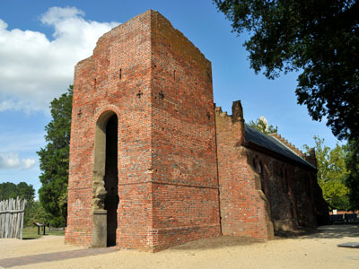
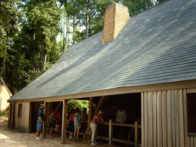
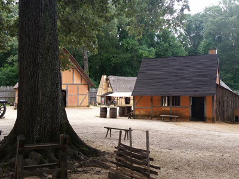
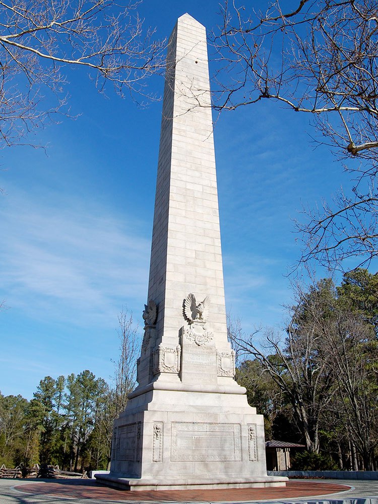
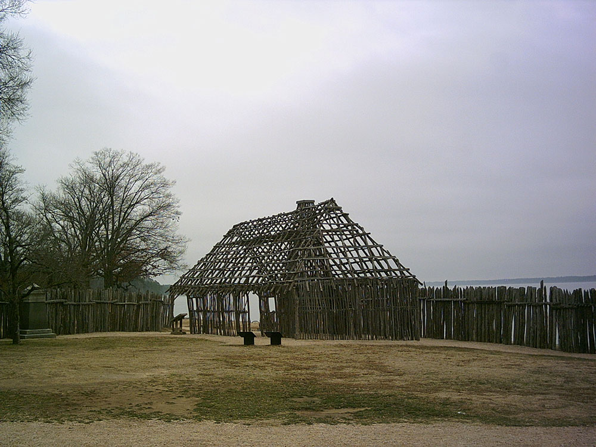
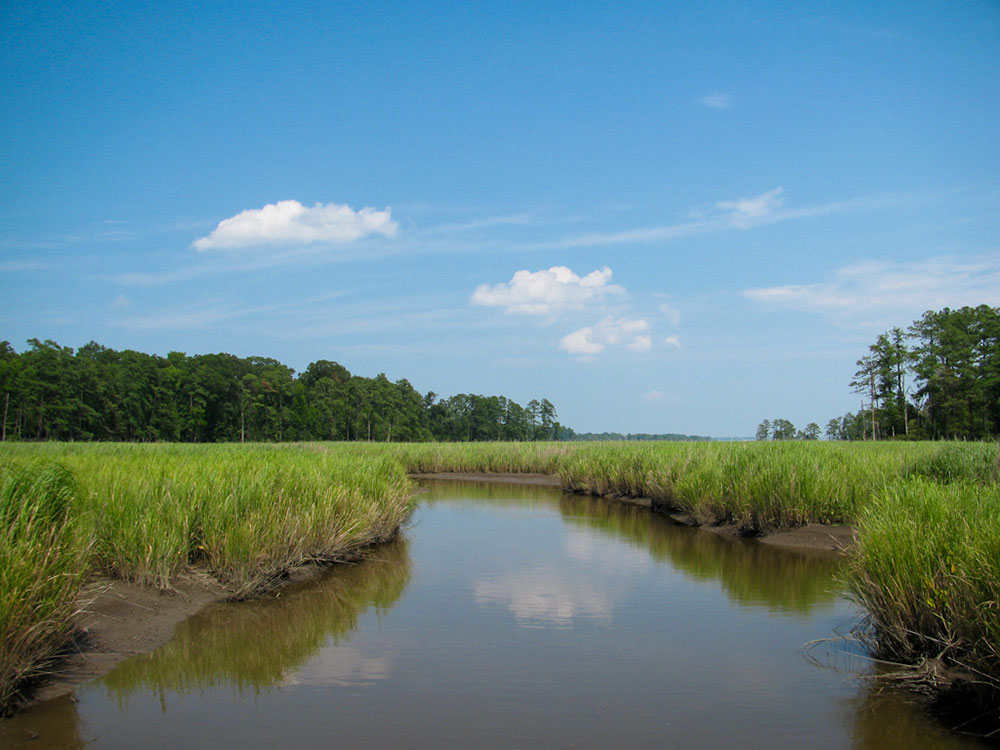

.jpg){kind=link}
General Information
Dickey Ridge Park Store and Outdoor Ranger Contact Station: Open Friday - Tuesday, 9am to 5pm
Big Meadows Park Store: Open Thursday to Monday, 9am to 5pm
Big Meadows Outdoor Ranger Contact Station: 9am to 5pm daily
This fee covers unlimited entry for one vehicle and passengers for seven consecutive days, beginning on the day of purchase
Accepts America The Beautiful Pass
Pets are prohibited on the following trails:
Fox Hollow Trail (mile 4.6)
Stony Man Trail (mile 41.7) except for portion that follows the Appalachian Trail
Limberlost Trail (mile 43)
Post Office Junction to Old Rag Shelter
Old Rag Ridge Trail
Old Rag Saddle Trail
Old Rag Access Trail
Ridge Access Trail (Old Rag area)
Dark Hollow Falls Trail (mile 50.7)
Story of the Forest Trail (mile 51)
Bearfence Mountain Trail (mile 56.4)
Frazier Discovery Trail (mile 79.5)
How to Get There
Overview
Jamestown was the first permanent English settlement in North America, founded in May 1607 on the banks of the James River in Virginia, and it is one of the most important historic sites in the United States. Its story includes Captain John Smith, Pocahontas, and the Powhatan people, the first representative legislative assembly in 1619, and the arrival of the first enslaved Africans in the colony the same year. Today two complementary sites, Historic Jamestowne and Jamestown Settlement, tell the story of the colony.
Visitors come to Jamestown to walk the grounds of the original fort site at Historic Jamestowne, to see the ongoing archaeological digs, and to visit the museum at Jamestown Rediscovery. They also come for the living history museum at Jamestown Settlement, with its replica fort, Powhatan village, and replicas of the ships, and for the Jamestown Glasshouse, which is the site of the first industry in the colony.
History
In 1607, 104 colonists sent by the Virginia Company of London landed on Jamestown Island and built a triangular fort, in the territory of the Powhatan Confederacy. The early years were harsh, with disease, hunger, and conflict, especially during the "Starving Time" of the winter of 1609 to 1610, when most colonists died. The colony survived thanks to tobacco, introduced by John Rolfe, and in 1619 the first representative assembly in English America met in the church at Jamestown, and a ship brought the first enslaved Africans to Virginia. Jamestown was the capital until 1699, when the government moved to Williamsburg, and it was largely abandoned afterward. In 1994, archaeologists discovered the remains of the original fort, which had been thought lost to the river.
Sightseeing and Popular Landmarks
Historic Jamestowne, on Jamestown Island, is the actual site of the 1607 fort and has the Archaearium museum, which displays artifacts found in the dig, as well as the remains of a seventeenth-century church tower. Jamestown Settlement has full-size replicas of the three ships, the Susan Constant, Godspeed, and Discovery, a recreated James Fort, and a Powhatan Indian village. The Glasshouse has working glassblowers, and the Island Drive offers a scenic route.
Culture and Museums
The Archaearium at Historic Jamestowne displays artifacts from the 1607 fort, including the remains of "Jane," a young woman whose skeleton showed evidence of cannibalism during the Starving Time. Jamestown Rediscovery is the archaeological project that has uncovered the fort since 1994, and the Jamestown Settlement museum has galleries on Powhatan, English, and African cultures. The nearby Colonial Williamsburg and Yorktown add to the story of colonial and Revolutionary America.
Parks
Jamestown Island is part of the Colonial National Historical Park, managed by the National Park Service, and has a five-mile scenic loop drive and walking trails through marsh and forest. The Colonial Parkway connects Jamestown to Williamsburg and Yorktown, and the James River offers views and paddling. The Chickahominy Riverfront Park and the Virginia Capital Trail are other places to explore outdoors.
Seasons and Weather
Jamestown has a humid subtropical climate. Summers are hot and humid, with highs in the upper 80s°F, and winters are mild, with highs in the 50s°F. Spring and fall are the most pleasant seasons for exploring the outdoor sites, and hurricane season runs from June to November.
This article uses material from Wikipedia as well as information from official tourism and institutional sources. Key references include Historic Jamestowne, Jamestown Settlement, National Park Service Colonial National Historical Park, Virginia Tourism, and National Weather Service Wakefield. Wikipedia material is from the articles "Jamestown, Virginia" and "Jamestown Settlement", and is available under the Creative Commons Attribution-Share-Alike License 3.0.
Featured Locations

Tony Fischer, CC BY 2.0, via Wikimedia Commons; Image Size Adjusted
.jpg){kind=link}

Nationalparks at English Wikipedia, CC BY-SA 2.5, via Wikimedia Commons; Image Size Adjusted


Smash the Iron Cage, CC BY-SA 4.0, via Wikimedia Commons; Image Size Adjusted


Pi3.124, CC BY-SA 4.0, via Wikimedia Commons; Image Size Adjusted


Fletcher6, CC BY-SA 3.0, via Wikimedia Commons ; Image Size Adjusted



National Park Service, CC BY-SA 2.0, via Wikimedia Commons ; Image Size Adjusted_(8426448355).jpg){kind=link}